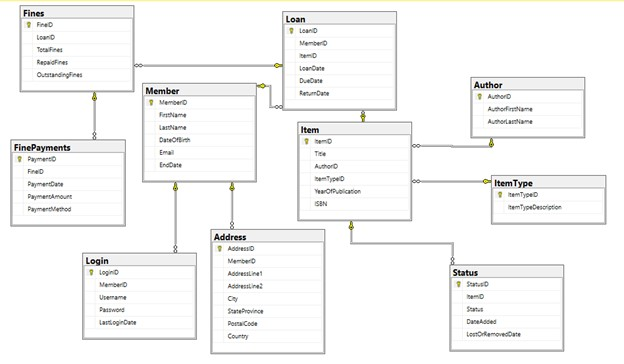

In this project, the databricks plarform was deployed to train a predictive model, with about 96% performance accuracy,
for a manufacturing company that uses vibration sensors to monitor the machinery within their production line, aiming
at classifying whether there is a fault with the machine based on the readings from the vibration sensors. Multiple runs
with different hyperparameters and four different classification algorithms which include Decision Tree, Pyspark Logistic
Regression, Support Vector Machine and Random Forest Classifiers were also deployed.
This project involves the analysis a set of clinical trials, representing a collection of
research report carried out within a period of three years, in combination with an accompanied
set of pharmaceutical violations by a list of pharmaceutical companies. This was carried out in three different
implementations which include Data Frame, Spark SQL, and RDD, as well as with visualization of results.

This project involves the design and development of a standard library database
system using Microsoft SQL Server, along with a number of associated database objects,
such as stored procedure, user-defined functions, views, and triggers, making provisions and guidance for
data security, integrity, backup and recovery.
In this project, three datasets were involved, with the purpose of analyzing the prescribing data to understand more
about the types of medication being prescribed, the organisation doing the prescription and the quantities
prescribed, with focus on Bolton.